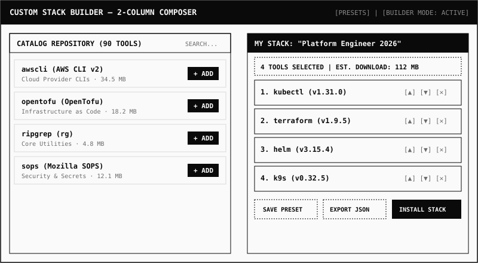

PROVISIONING COMPOSER
12 Curated Stacks & Custom Stack Builder
Provision a machine for specific engineering disciplines with 12 battle-tested bundles: Kubernetes Starter, Kubernetes Advanced, Cloud Engineer, DevSecOps, IaC Complete, Observability, and Terminal Power User.
Switch into the Custom Stack Builder for an interactive 2-column composer: browse 90 cataloged tools on the left with accessible "+ Add" buttons, reorder and inspect live download estimates on the right, save local presets, and export portable JSON definitions to share with teammates.
12 PRESETS
DRAG & DROP
SIZE ESTIMATES
JSON IMPORT/EXPORT
